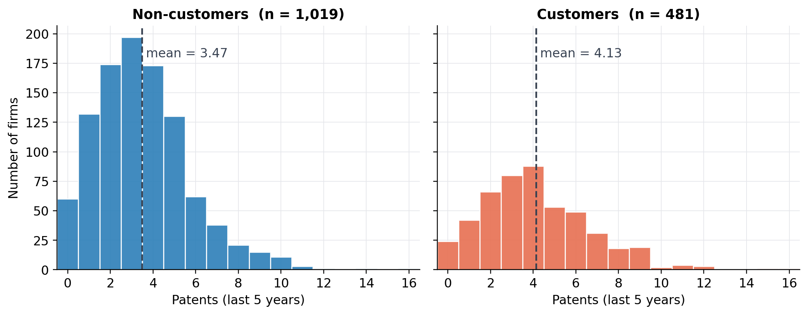
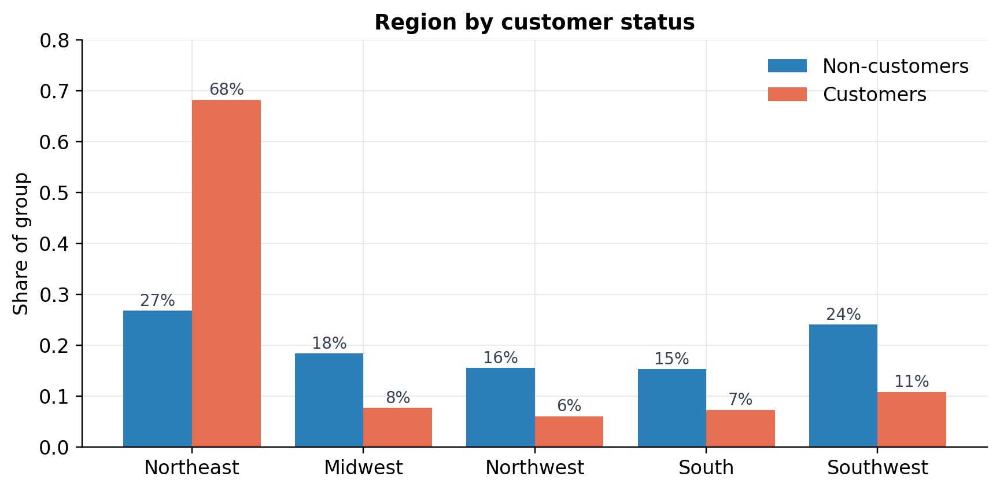
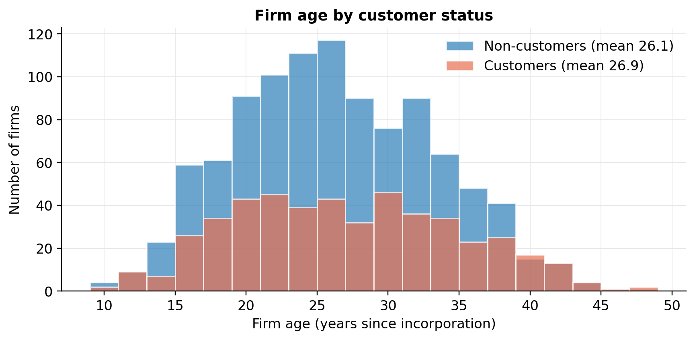
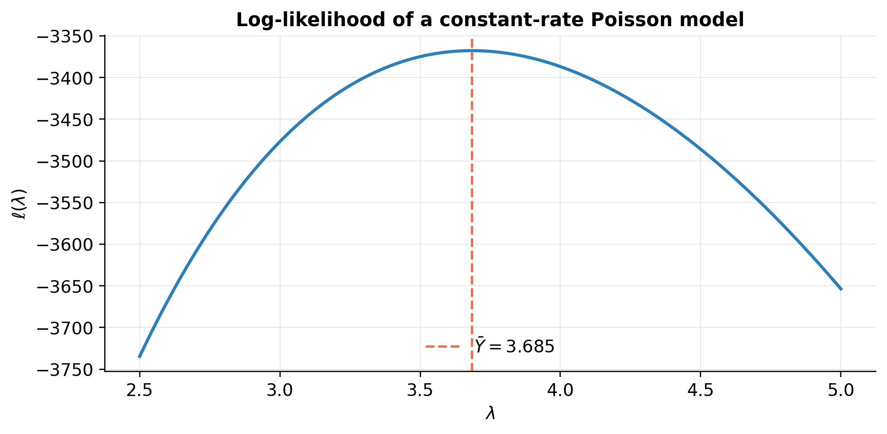
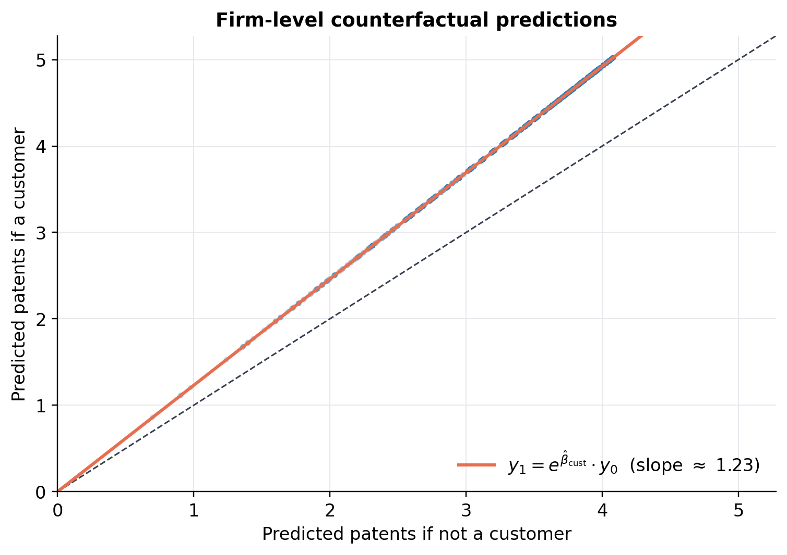

Code
df = pd.read_csv("blueprinty.csv")
df.head()| patents | region | age | iscustomer | |
|---|---|---|---|---|
| 0 | 0 | Midwest | 32.500 | 0 |
| 1 | 3 | Southwest | 37.500 | 0 |
| 2 | 4 | Northwest | 27.000 | 1 |
| 3 | 3 | Northeast | 24.500 | 0 |
| 4 | 3 | Southwest | 37.000 | 0 |
A Case Study of Blueprinty’s Software and Patent Awards
Mohamad Boroumand
May 17, 2026
Blueprinty sells a niche piece of software: an authoring tool that helps engineering firms put together the blueprints that accompany applications to the United States Patent and Trademark Office. The product is sold on the promise that a better-formatted, more rigorous application is more likely to be granted, and Blueprinty’s marketing team would very much like to claim — backed by data — that firms that use Blueprinty’s software get more patents approved than firms that do not.
The cleanest way to evaluate that claim would be a randomized experiment, or at least a panel where we observed each firm’s patent count both before and after it adopted the software. We have neither. What we do have is a cross-section of 1,500 mature engineering firms with four pieces of information per firm: the number of patents awarded over the last five years, the firm’s region, its age since incorporation, and a binary indicator for whether the firm uses Blueprinty’s software.
That cross-section is enough to compute a raw difference in patent counts between customers and non-customers, but it is not enough to interpret that difference as the effect of the software. Blueprinty’s customers are not a random subset of engineering firms — they selected into the product, and the firms that selected in may simply differ from the firms that did not in ways that also affect patenting. Before we can credibly attribute anything to the software, we have to take a careful look at what those differences are, and then model the patent count in a way that accounts for them.
The rest of this post does exactly that. We model the patent count as a Poisson random variable, derive its likelihood from first principles, find the maximum-likelihood estimate (MLE) by hand and then numerically, extend the model to a Poisson regression that conditions on firm age and region, and finally use the fitted regression to produce a counterfactual estimate of the average effect of being a Blueprinty customer.
| patents | region | age | iscustomer | |
|---|---|---|---|---|
| 0 | 0 | Midwest | 32.500 | 0 |
| 1 | 3 | Southwest | 37.500 | 0 |
| 2 | 4 | Northwest | 27.000 | 1 |
| 3 | 3 | Northeast | 24.500 | 0 |
| 4 | 3 | Southwest | 37.000 | 0 |
The dataset has 1,500 rows and four columns. Roughly a third of the firms (481 of 1,500) are Blueprinty customers; the rest are not. Patent counts range from 0 to 16, with a sample mean of 3.68.
The first question to ask is the one the marketing team is implicitly asking: do customers, on average, have more patents than non-customers? The histograms below put the two groups side-by-side on the same x-axis. The dashed lines mark each group’s mean.

Customers do hold more patents on average — about 4.13 versus 3.47 for non-customers, a raw gap of roughly two-thirds of a patent over a five-year window. Both distributions are right-skewed with a long upper tail, which is typical of count data and the first hint that a Poisson-like distribution will be a reasonable starting point.
That gap is suggestive but not, by itself, evidence that the software causes more patents. Two firm characteristics that could easily drive both adoption and patent counts are the firm’s region and its age, so let’s look at each.

The regional split is striking: 68% of Blueprinty’s customers are in the Northeast, versus only 27% of non-customers. The Northeast happens to be home to many of the country’s largest engineering and pharmaceutical firms, so a regional concentration of this size almost certainly reflects both Blueprinty’s go-to-market strategy and the industrial geography of the country. Whatever the cause, the upshot is the same: if firms in the Northeast tend to file more patents anyway, then comparing raw customer means to raw non-customer means will conflate the Blueprinty effect with a regional effect.

The age picture is more subtle. Customers are very slightly older on average (26.9 vs. 26.1 years), but the two distributions overlap heavily across the full range, from young firms in their teens to mature firms approaching half a century. The age gap by itself is small, but because the relationship between age and patenting need not be linear — very young firms are still ramping up, while very old firms may have shifted focus away from new IP — even a small mean difference can matter once we condition on age in a flexible way.
The takeaway from this exploratory pass is straightforward: customers do hold more patents, but they are also concentrated in a particular region and are slightly older, both of which could independently affect patenting. The rest of the analysis is built around isolating the customer effect from these confounds.
Patent counts cannot be negative and they cannot take fractional values, which immediately rules out the Normal distribution as a natural model. The standard starting point for count data is the Poisson distribution, which puts probability mass on non-negative integers and has a single parameter \(\lambda > 0\) that doubles as both its mean and its variance. If \(Y_i \sim \text{Poisson}(\lambda)\) independently for \(i = 1, \dots, n\), then
\[ f(Y_i \mid \lambda) = \frac{e^{-\lambda} \lambda^{Y_i}}{Y_i!}. \]
Under the iid assumption the joint likelihood factorizes,
\[ \mathcal{L}(\lambda) \;=\; \prod_{i=1}^{n} \frac{e^{-\lambda}\lambda^{Y_i}}{Y_i!} \;=\; \frac{e^{-n\lambda}\,\lambda^{\sum_i Y_i}}{\prod_i Y_i!}, \]
and taking logs gives a much friendlier expression to work with,
\[ \ell(\lambda) \;=\; -n\lambda \;+\; \log(\lambda)\sum_{i=1}^{n} Y_i \;-\; \sum_{i=1}^{n} \log(Y_i!). \]
The last term does not depend on \(\lambda\), so it does not move the optimum — but we keep it in the code because it makes the absolute value of the log-likelihood meaningful and lets us compare across models. The closed-form MLE drops out as soon as we take a derivative:
\[ \frac{d\ell}{d\lambda} \;=\; -n + \frac{\sum_i Y_i}{\lambda} \;=\; 0 \quad\Longrightarrow\quad \widehat{\lambda}_{\text{MLE}} = \bar{Y}. \]
Which “feels right”: the mean of a Poisson is \(\lambda\), and the maximum-likelihood estimator of that mean is the sample mean. With that result in hand, the numerical exercise becomes a useful sanity check on our likelihood code, not a leap of faith.
def poisson_loglikelihood(lam, Y):
"""Log-likelihood for iid Y_i ~ Poisson(lam)."""
if np.any(lam <= 0):
return -np.inf
return np.sum(-lam + Y * np.log(lam) - gammaln(Y + 1))
Y = df["patents"].values
print(f"Sample mean Y-bar = {Y.mean():.4f}")
print(f"log-likelihood at Y-bar = {poisson_loglikelihood(Y.mean(), Y):.2f}")Sample mean Y-bar = 3.6847
log-likelihood at Y-bar = -3367.68A useful way to see the MLE before you compute it is to evaluate \(\ell(\lambda)\) over a grid and plot the curve. The maximum is the point you’d read off visually, and for a Poisson it should sit at \(\bar{Y}\).

The curve has the classic concave shape of a well-behaved log-likelihood. To “read off” the MLE visually, find the \(\lambda\) at which the curve peaks — about 3.68 — and that’s your estimate. It coincides exactly with the dashed line at \(\bar{Y}\), as the math promised.
We can confirm the analytical result by handing the negative log-likelihood to a generic optimizer.
Numerical MLE = 3.684668
Sample mean (Y-bar) = 3.684667
Absolute difference = 1.30e-06The two answers agree to six decimal places, which is exactly what we’d expect: there is no second peak for the optimizer to get caught on and no boundary it can run off the edge of. The convergence to \(\bar{Y}\) is a small validation that our log-likelihood function is correct — and the same function will form the backbone of the regression model in the next section.
The constant-rate Poisson model treats every firm as a draw from the same distribution, which is fine as a starting point but ignores everything we just learned about how customers, non-customers, regions, and ages differ from one another. The standard fix is to let \(\lambda\) vary across firms as a function of their observed characteristics:
\[ Y_i \sim \text{Poisson}(\lambda_i), \qquad \lambda_i = \exp\!\big(X_i'\,\beta\big). \]
The linear predictor \(X_i'\beta\) can take any real value, but \(\lambda_i\) must stay strictly positive — counts come from a rate, and rates cannot be negative. Exponentiating the linear predictor is the cleanest way to satisfy that constraint, and it makes the coefficients straightforward to interpret on the multiplicative scale: a one-unit increase in covariate \(j\) multiplies the expected patent count by \(\exp(\beta_j)\).
The covariates we’ll include are:
scipy.optimizedf["age_sq"] = df["age"] ** 2
region_dummies = (pd.get_dummies(df["region"], prefix="region", drop_first=True)
.astype(float))
X_df = pd.concat([
pd.DataFrame({"(intercept)": 1.0, "age": df["age"], "age_sq": df["age_sq"]}),
region_dummies,
pd.DataFrame({"iscustomer": df["iscustomer"].astype(float)}),
], axis=1)
X = X_df.values
Y = df["patents"].values
X_df.columns.tolist()['(intercept)',
'age',
'age_sq',
'region_Northeast',
'region_Northwest',
'region_South',
'region_Southwest',
'iscustomer']def poisson_regression_loglikelihood(beta, Y, X):
eta = X @ beta
eta = np.clip(eta, -30, 30) # numerical safety
lam = np.exp(eta)
return np.sum(-lam + Y * eta - gammaln(Y + 1))
def neg_ll(beta, Y, X):
return -poisson_regression_loglikelihood(beta, Y, X)
res_reg = minimize(neg_ll, x0=np.zeros(X.shape[1]),
args=(Y, X), method="BFGS")
# BFGS returns an inverse-Hessian approximation directly.
se_optim = np.sqrt(np.diag(res_reg.hess_inv))Standard errors are the square roots of the diagonal of the inverse of the negative Hessian of the log-likelihood, which BFGS conveniently approximates as it converges. We pull those out alongside the coefficient estimates.
statsmodels GLMThe custom MLE and the GLM should produce essentially identical coefficient estimates because they are optimizing the same likelihood. The standard errors can differ very slightly: GLM computes them from the exact information matrix evaluated at the MLE, while optim/BFGS ships them as a byproduct of the quasi-Newton update and is therefore subject to the optimizer’s numerical approximation. In practice the two columns line up to two or three decimal places, which is more than enough for inference.
| Term | Estimate (optim) | SE (optim) | Estimate (GLM) | SE (GLM) | z (GLM) | p (GLM) | |
|---|---|---|---|---|---|---|---|
| (intercept) | -0.5098 | 0.1803 | -0.5089 | 0.1832 | -2.78 | 0.00546 | ** |
| age | 0.1487 | 0.0138 | 0.1486 | 0.0139 | 10.72 | 8.54e-27 | *** |
| age_sq | -0.0030 | 0.0003 | -0.0030 | 0.0003 | -11.51 | 1.13e-30 | *** |
| region_Northeast | 0.0292 | 0.0407 | 0.0292 | 0.0436 | 0.67 | 0.504 | |
| region_Northwest | -0.0176 | 0.0499 | -0.0176 | 0.0538 | -0.33 | 0.744 | |
| region_South | 0.0565 | 0.0486 | 0.0566 | 0.0527 | 1.07 | 0.283 | |
| region_Southwest | 0.0506 | 0.0443 | 0.0506 | 0.0472 | 1.07 | 0.284 | |
| iscustomer | 0.2076 | 0.0292 | 0.2076 | 0.0309 | 6.72 | 1.83e-11 | *** |
Reading the table from top to bottom:
The intercept is negative, but it represents the linear predictor for the omitted reference case (a hypothetical Midwest non-customer of age zero), which is well outside the support of the data, so its sign isn’t substantively meaningful on its own.
The age and age² coefficients form a hump: the positive linear term and the small negative quadratic term together say that patenting rises with age, but at a decreasing rate, and eventually starts to fall. The peak of the implied curve sits around age 25 (the turning point is \(-\beta_{\text{age}}/(2\beta_{\text{age}^2}) \approx 25\) years), which lines up with the kind of mid-career maturity at which an engineering firm is large enough to have an active R&D pipeline but not yet so old that it has shifted out of new-IP production.
The regional dummies are all small and statistically indistinguishable from zero once we condition on age and customer status. That is a useful finding in itself: the regional gap in raw patent counts we saw earlier appears to be driven by who lives where (especially the customer composition of the Northeast) rather than by anything about the region itself.
The customer coefficient is the headline. \(\hat\beta_{\text{customer}} \approx 0.208\) with a standard error of about 0.031, giving a z-statistic above 6 — comfortably outside any reasonable threshold for “no effect.” On the multiplicative scale, \(\exp(0.208) \approx 1.23\), meaning that, holding age and region fixed, a Blueprinty customer is expected to have about 23% more patents over a five-year window than an otherwise-identical non-customer. That number is the substantive output of the regression; we translate it into raw counts in the next section.
A 23% multiplier sounds clean, but it isn’t directly an answer to the question Blueprinty’s marketing team actually wants to answer: how many more patents does the software win you? The Poisson regression is multiplicative in \(\lambda\), not additive, so the effect on the count depends on the firm’s baseline rate, which in turn depends on its age and region. To get an answer in actual patents, we run two counterfactuals.
For each firm in the dataset we build two copies of its covariate row: one with iscustomer = 0 (forcing the firm to be a non-customer) and one with iscustomer = 1 (forcing it to be a customer). We then push both rows through the fitted model to get a predicted patent count under each scenario, and we average the firm-level difference across the sample.
beta_hat = glm.params
X0 = X_df.copy(); X0["iscustomer"] = 0.0
X1 = X_df.copy(); X1["iscustomer"] = 1.0
y0 = np.exp(X0.values @ beta_hat) # predicted patents if not a customer
y1 = np.exp(X1.values @ beta_hat) # predicted patents if a customer
ate = (y1 - y0).mean()
pct = (y1.mean() / y0.mean() - 1) * 100
print(f"Mean predicted patents | non-customer scenario = {y0.mean():.3f}")
print(f"Mean predicted patents | customer scenario = {y1.mean():.3f}")
print(f"Average treatment effect (patents over 5 yrs) = {ate:.3f}")
print(f"Implied relative increase = {pct:.1f}%")Mean predicted patents | non-customer scenario = 3.436
Mean predicted patents | customer scenario = 4.229
Average treatment effect (patents over 5 yrs) = 0.793
Implied relative increase = 23.1%
The model predicts that, on average, a Blueprinty customer wins about 0.79 more patents over five years than the same firm would have won without the software — a jump from roughly 3.44 to 4.23 patents, or about 23% in relative terms. The effect is not the same in absolute terms for every firm: firms whose age and region put them at a higher baseline rate benefit more in raw counts, even though the multiplier is the same. That is exactly what we should expect from a multiplicative model and is the right shape for a marketing claim — the benefit scales with the firm’s underlying patenting capacity.
A few caveats are worth stating plainly before the marketing team takes this number on the road.
This analysis is observational, not experimental. The customer dummy isolates the difference between customers and non-customers that cannot be explained by age, age-squared, or region — but it does not isolate the difference that cannot be explained by anything else about the firm. If Blueprinty’s customers also happen to have larger R&D budgets, more sophisticated legal teams, or a culture that takes patent prosecution more seriously, those traits will load onto the customer coefficient too. The 23% lift is consistent with the marketing claim that Blueprinty’s software helps; it is not by itself a clean estimate of the software’s causal effect. The cleanest version of that estimate would require either a randomized rollout or a panel of firms observed before and after adoption — neither of which Blueprinty has today, but both of which are now well worth the cost of running.
What we can say is that the simple “customers have more patents” story survives every adjustment we can make with this dataset. The raw gap of 0.66 patents between customer and non-customer means doesn’t shrink once we account for age and region; if anything it grows slightly to 0.79 patents on a like-for-like basis. That is the strongest claim this dataset will support, and it’s a reasonable foundation for further investment in measurement.
---
title: "Poisson Regression and Maximum Likelihood Estimation"
subtitle: "A Case Study of Blueprinty's Software and Patent Awards"
author: "Mohamad Boroumand"
date: "2026-05-17"
description: "A from-scratch derivation of the Poisson likelihood, a numerical MLE, a Poisson regression with custom optim() vs. statsmodels GLM, and a counterfactual estimate of how much Blueprinty's software lifts patent counts."
categories: [maximum likelihood, poisson regression, marketing analytics, python]
format:
html:
toc: true
toc-depth: 2
toc-title: "Contents"
theme: flatly
code-fold: true
code-tools: true
highlight-style: github
execute:
warning: false
message: false
---
```{python}
#| label: setup
#| echo: false
import numpy as np
import pandas as pd
import matplotlib.pyplot as plt
import matplotlib as mpl
from scipy.optimize import minimize
from scipy.special import gammaln
import statsmodels.api as sm
mpl.rcParams.update({
"figure.dpi": 110,
"savefig.dpi": 110,
"axes.spines.top": False,
"axes.spines.right": False,
"axes.grid": True,
"grid.color": "#E5E7EB",
"grid.linestyle": "-",
"grid.linewidth": 0.6,
"axes.axisbelow": True,
"font.size": 11,
"axes.titleweight": "bold",
"axes.titlesize": 12,
"axes.labelsize": 11,
})
BLUE = "#2C7FB8"
ORANGE = "#E76F51"
NEUTRAL = "#374151"
pd.set_option("display.float_format", lambda x: f"{x:,.3f}")
```
## Introduction
Blueprinty sells a niche piece of software: an authoring tool that helps engineering firms put together the blueprints that accompany applications to the United States Patent and Trademark Office. The product is sold on the promise that a better-formatted, more rigorous application is more likely to be granted, and Blueprinty's marketing team would very much like to claim — backed by data — that **firms that use Blueprinty's software get more patents approved than firms that do not**.
The cleanest way to evaluate that claim would be a randomized experiment, or at least a panel where we observed each firm's patent count both *before* and *after* it adopted the software. We have neither. What we do have is a cross-section of 1,500 mature engineering firms with four pieces of information per firm: the number of patents awarded over the last five years, the firm's region, its age since incorporation, and a binary indicator for whether the firm uses Blueprinty's software.
That cross-section is enough to compute a raw difference in patent counts between customers and non-customers, but it is not enough to *interpret* that difference as the effect of the software. Blueprinty's customers are not a random subset of engineering firms — they selected into the product, and the firms that selected in may simply differ from the firms that did not in ways that also affect patenting. Before we can credibly attribute anything to the software, we have to take a careful look at what those differences are, and then model the patent count in a way that accounts for them.
The rest of this post does exactly that. We model the patent count as a Poisson random variable, derive its likelihood from first principles, find the maximum-likelihood estimate (MLE) by hand and then numerically, extend the model to a Poisson regression that conditions on firm age and region, and finally use the fitted regression to produce a counterfactual estimate of the average effect of being a Blueprinty customer.
## Exploring the Data
```{python}
#| label: load-data
#| echo: true
df = pd.read_csv("blueprinty.csv")
df.head()
```
The dataset has 1,500 rows and four columns. Roughly a third of the firms (481 of 1,500) are Blueprinty customers; the rest are not. Patent counts range from 0 to 16, with a sample mean of 3.68.
The first question to ask is the one the marketing team is implicitly asking: *do customers, on average, have more patents than non-customers?* The histograms below put the two groups side-by-side on the same x-axis. The dashed lines mark each group's mean.
```{python}
#| label: fig-patents
#| echo: false
#| fig-cap: "Distribution of patents awarded over the last 5 years, by customer status. Dashed lines mark group means."
fig, axes = plt.subplots(1, 2, figsize=(10, 4), sharey=True)
bins = np.arange(df["patents"].max() + 2) - 0.5
m0 = df.loc[df["iscustomer"] == 0, "patents"]
m1 = df.loc[df["iscustomer"] == 1, "patents"]
axes[0].hist(m0, bins=bins, color=BLUE, edgecolor="white", alpha=0.9)
axes[0].axvline(m0.mean(), color=NEUTRAL, linestyle="--", linewidth=1.5)
axes[0].set_title(f"Non-customers (n = {len(m0):,})")
axes[0].set_xlabel("Patents (last 5 years)")
axes[0].set_ylabel("Number of firms")
axes[0].text(m0.mean() + 0.2, 180, f"mean = {m0.mean():.2f}", color=NEUTRAL)
axes[1].hist(m1, bins=bins, color=ORANGE, edgecolor="white", alpha=0.9)
axes[1].axvline(m1.mean(), color=NEUTRAL, linestyle="--", linewidth=1.5)
axes[1].set_title(f"Customers (n = {len(m1):,})")
axes[1].set_xlabel("Patents (last 5 years)")
axes[1].text(m1.mean() + 0.2, 180, f"mean = {m1.mean():.2f}", color=NEUTRAL)
for ax in axes:
ax.set_xlim(-0.5, 16.5)
plt.tight_layout()
plt.show()
```
Customers do hold more patents on average — about **4.13** versus **3.47** for non-customers, a raw gap of roughly two-thirds of a patent over a five-year window. Both distributions are right-skewed with a long upper tail, which is typical of count data and the first hint that a Poisson-like distribution will be a reasonable starting point.
That gap is suggestive but not, by itself, evidence that the software *causes* more patents. Two firm characteristics that could easily drive both adoption and patent counts are the firm's region and its age, so let's look at each.
```{python}
#| label: fig-region
#| echo: false
#| fig-cap: "Regional composition by customer status. Customers are heavily concentrated in the Northeast."
reg = (pd.crosstab(df["region"], df["iscustomer"], normalize="columns")
.rename(columns={0: "Non-customers", 1: "Customers"}))
reg = reg.loc[["Northeast", "Midwest", "Northwest", "South", "Southwest"]]
fig, ax = plt.subplots(figsize=(8, 4))
x = np.arange(len(reg))
w = 0.4
ax.bar(x - w/2, reg["Non-customers"], width=w, color=BLUE, label="Non-customers")
ax.bar(x + w/2, reg["Customers"], width=w, color=ORANGE, label="Customers")
ax.set_xticks(x); ax.set_xticklabels(reg.index)
ax.set_ylabel("Share of group")
ax.set_title("Region by customer status")
ax.legend(frameon=False)
for i, (a, b) in enumerate(zip(reg["Non-customers"], reg["Customers"])):
ax.text(i - w/2, a + 0.01, f"{a:.0%}", ha="center", fontsize=9, color=NEUTRAL)
ax.text(i + w/2, b + 0.01, f"{b:.0%}", ha="center", fontsize=9, color=NEUTRAL)
ax.set_ylim(0, max(reg.values.max(), 0.7) + 0.1)
plt.tight_layout()
plt.show()
```
The regional split is striking: **68% of Blueprinty's customers are in the Northeast**, versus only 27% of non-customers. The Northeast happens to be home to many of the country's largest engineering and pharmaceutical firms, so a regional concentration of this size almost certainly reflects both Blueprinty's go-to-market strategy and the industrial geography of the country. Whatever the cause, the upshot is the same: if firms in the Northeast tend to file more patents *anyway*, then comparing raw customer means to raw non-customer means will conflate the Blueprinty effect with a regional effect.
```{python}
#| label: fig-age
#| echo: false
#| fig-cap: "Distribution of firm age (years since incorporation), by customer status."
fig, ax = plt.subplots(figsize=(8, 4))
bins = np.arange(df["age"].min(), df["age"].max() + 2, 2)
ax.hist(df.loc[df["iscustomer"] == 0, "age"], bins=bins, color=BLUE, alpha=0.7,
edgecolor="white", label=f"Non-customers (mean {df.loc[df.iscustomer==0,'age'].mean():.1f})")
ax.hist(df.loc[df["iscustomer"] == 1, "age"], bins=bins, color=ORANGE, alpha=0.7,
edgecolor="white", label=f"Customers (mean {df.loc[df.iscustomer==1,'age'].mean():.1f})")
ax.set_xlabel("Firm age (years since incorporation)")
ax.set_ylabel("Number of firms")
ax.set_title("Firm age by customer status")
ax.legend(frameon=False)
plt.tight_layout()
plt.show()
```
The age picture is more subtle. Customers are very slightly older on average (26.9 vs. 26.1 years), but the two distributions overlap heavily across the full range, from young firms in their teens to mature firms approaching half a century. The age gap by itself is small, but because the relationship between age and patenting need not be linear — very young firms are still ramping up, while very old firms may have shifted focus away from new IP — even a small mean difference can matter once we condition on age in a flexible way.
The takeaway from this exploratory pass is straightforward: customers do hold more patents, but they are also concentrated in a particular region and are slightly older, both of which could independently affect patenting. The rest of the analysis is built around isolating the customer effect from these confounds.
## A Simple Poisson Model via Maximum Likelihood
Patent counts cannot be negative and they cannot take fractional values, which immediately rules out the Normal distribution as a natural model. The standard starting point for count data is the **Poisson distribution**, which puts probability mass on non-negative integers and has a single parameter $\lambda > 0$ that doubles as both its mean and its variance. If $Y_i \sim \text{Poisson}(\lambda)$ independently for $i = 1, \dots, n$, then
$$
f(Y_i \mid \lambda) = \frac{e^{-\lambda} \lambda^{Y_i}}{Y_i!}.
$$
Under the iid assumption the joint likelihood factorizes,
$$
\mathcal{L}(\lambda) \;=\; \prod_{i=1}^{n} \frac{e^{-\lambda}\lambda^{Y_i}}{Y_i!}
\;=\; \frac{e^{-n\lambda}\,\lambda^{\sum_i Y_i}}{\prod_i Y_i!},
$$
and taking logs gives a much friendlier expression to work with,
$$
\ell(\lambda) \;=\; -n\lambda \;+\; \log(\lambda)\sum_{i=1}^{n} Y_i \;-\; \sum_{i=1}^{n} \log(Y_i!).
$$
The last term does not depend on $\lambda$, so it does not move the optimum — but we keep it in the code because it makes the absolute value of the log-likelihood meaningful and lets us compare across models. The closed-form MLE drops out as soon as we take a derivative:
$$
\frac{d\ell}{d\lambda} \;=\; -n + \frac{\sum_i Y_i}{\lambda} \;=\; 0
\quad\Longrightarrow\quad
\widehat{\lambda}_{\text{MLE}} = \bar{Y}.
$$
Which "feels right": the mean of a Poisson is $\lambda$, and the maximum-likelihood estimator of that mean is the sample mean. With that result in hand, the numerical exercise becomes a useful sanity check on our likelihood code, not a leap of faith.
### Coding the log-likelihood
```{python}
#| label: poisson-loglik
#| echo: true
def poisson_loglikelihood(lam, Y):
"""Log-likelihood for iid Y_i ~ Poisson(lam)."""
if np.any(lam <= 0):
return -np.inf
return np.sum(-lam + Y * np.log(lam) - gammaln(Y + 1))
Y = df["patents"].values
print(f"Sample mean Y-bar = {Y.mean():.4f}")
print(f"log-likelihood at Y-bar = {poisson_loglikelihood(Y.mean(), Y):.2f}")
```
A useful way to see the MLE before you compute it is to evaluate $\ell(\lambda)$ over a grid and plot the curve. The maximum is the point you'd read off visually, and for a Poisson it should sit at $\bar{Y}$.
```{python}
#| label: fig-loglik
#| echo: false
#| fig-cap: "Poisson log-likelihood as a function of λ, evaluated on the observed patent counts. The dashed line marks the analytical MLE λ̂ = ȳ."
grid = np.linspace(2.5, 5.0, 400)
ll = [poisson_loglikelihood(l, Y) for l in grid]
fig, ax = plt.subplots(figsize=(8, 4))
ax.plot(grid, ll, color=BLUE, linewidth=2)
ax.axvline(Y.mean(), color=ORANGE, linestyle="--", linewidth=1.5,
label=fr"$\bar{{Y}} = {Y.mean():.3f}$")
ax.set_xlabel(r"$\lambda$")
ax.set_ylabel(r"$\ell(\lambda)$")
ax.set_title("Log-likelihood of a constant-rate Poisson model")
ax.legend(frameon=False, loc="lower center")
plt.tight_layout()
plt.show()
```
The curve has the classic concave shape of a well-behaved log-likelihood. To "read off" the MLE visually, find the $\lambda$ at which the curve peaks — about 3.68 — and that's your estimate. It coincides exactly with the dashed line at $\bar{Y}$, as the math promised.
### Finding the MLE numerically
We can confirm the analytical result by handing the negative log-likelihood to a generic optimizer.
```{python}
#| label: mle-numerical
#| echo: true
def neg_loglik(lam_vec, Y):
return -poisson_loglikelihood(lam_vec[0], Y)
res = minimize(neg_loglik, x0=[1.0], args=(Y,), method="Nelder-Mead")
print(f"Numerical MLE = {res.x[0]:.6f}")
print(f"Sample mean (Y-bar) = {Y.mean():.6f}")
print(f"Absolute difference = {abs(res.x[0] - Y.mean()):.2e}")
```
The two answers agree to six decimal places, which is exactly what we'd expect: there is no second peak for the optimizer to get caught on and no boundary it can run off the edge of. The convergence to $\bar{Y}$ is a small validation that our log-likelihood function is correct — and the same function will form the backbone of the regression model in the next section.
## Poisson Regression
The constant-rate Poisson model treats every firm as a draw from the same distribution, which is fine as a starting point but ignores everything we just learned about how customers, non-customers, regions, and ages differ from one another. The standard fix is to let $\lambda$ vary across firms as a function of their observed characteristics:
$$
Y_i \sim \text{Poisson}(\lambda_i), \qquad \lambda_i = \exp\!\big(X_i'\,\beta\big).
$$
The linear predictor $X_i'\beta$ can take any real value, but $\lambda_i$ must stay strictly positive — counts come from a rate, and rates cannot be negative. Exponentiating the linear predictor is the cleanest way to satisfy that constraint, and it makes the coefficients straightforward to interpret on the multiplicative scale: a one-unit increase in covariate $j$ multiplies the expected patent count by $\exp(\beta_j)$.
The covariates we'll include are:
- an **intercept**,
- **age** and **age²** — patenting is unlikely to be monotone in age, so we let the model bend the relationship,
- **region dummies** for four of the five regions (we drop one — Midwest, here — to avoid perfect collinearity with the intercept),
- **iscustomer** — the variable of interest.
### Custom MLE via `scipy.optimize`
```{python}
#| label: design-matrix
#| echo: true
df["age_sq"] = df["age"] ** 2
region_dummies = (pd.get_dummies(df["region"], prefix="region", drop_first=True)
.astype(float))
X_df = pd.concat([
pd.DataFrame({"(intercept)": 1.0, "age": df["age"], "age_sq": df["age_sq"]}),
region_dummies,
pd.DataFrame({"iscustomer": df["iscustomer"].astype(float)}),
], axis=1)
X = X_df.values
Y = df["patents"].values
X_df.columns.tolist()
```
```{python}
#| label: poisson-reg-loglik
#| echo: true
def poisson_regression_loglikelihood(beta, Y, X):
eta = X @ beta
eta = np.clip(eta, -30, 30) # numerical safety
lam = np.exp(eta)
return np.sum(-lam + Y * eta - gammaln(Y + 1))
def neg_ll(beta, Y, X):
return -poisson_regression_loglikelihood(beta, Y, X)
res_reg = minimize(neg_ll, x0=np.zeros(X.shape[1]),
args=(Y, X), method="BFGS")
# BFGS returns an inverse-Hessian approximation directly.
se_optim = np.sqrt(np.diag(res_reg.hess_inv))
```
Standard errors are the square roots of the diagonal of the inverse of the negative Hessian of the log-likelihood, which BFGS conveniently approximates as it converges. We pull those out alongside the coefficient estimates.
### Cross-check against `statsmodels` GLM
```{python}
#| label: glm-fit
#| echo: true
glm = sm.GLM(Y, X, family=sm.families.Poisson()).fit()
```
The custom MLE and the GLM should produce essentially identical coefficient estimates because they are optimizing the same likelihood. The standard errors can differ very slightly: GLM computes them from the exact information matrix evaluated at the MLE, while `optim`/`BFGS` ships them as a byproduct of the quasi-Newton update and is therefore subject to the optimizer's numerical approximation. In practice the two columns line up to two or three decimal places, which is more than enough for inference.
```{python}
#| label: tbl-coef
#| echo: false
def stars(p):
return "***" if p < 0.001 else "**" if p < 0.01 else "*" if p < 0.05 else ""
coef_table = pd.DataFrame({
"Term": X_df.columns,
"Estimate (optim)": res_reg.x,
"SE (optim)": se_optim,
"Estimate (GLM)": glm.params,
"SE (GLM)": np.array(glm.bse),
"z (GLM)": np.array(glm.params / glm.bse),
"p (GLM)": np.array(glm.pvalues),
})
coef_table[""] = [stars(p) for p in coef_table["p (GLM)"]]
(coef_table.style
.format({"Estimate (optim)": "{:.4f}",
"SE (optim)": "{:.4f}",
"Estimate (GLM)": "{:.4f}",
"SE (GLM)": "{:.4f}",
"z (GLM)": "{:.2f}",
"p (GLM)": "{:.3g}"})
.hide(axis="index")
.set_table_styles([
{"selector": "th",
"props": [("background", "#F3F4F6"),
("color", "#111827"),
("text-align", "left"),
("padding", "6px 10px"),
("border-bottom", "1px solid #D1D5DB")]},
{"selector": "td",
"props": [("padding", "5px 10px"),
("border-bottom", "1px solid #F1F5F9")]},
{"selector": "caption",
"props": [("caption-side", "top"),
("font-weight", "600"),
("font-size", "1rem"),
("padding-bottom", "6px")]}])
.set_caption("Poisson regression coefficients: custom MLE vs. statsmodels GLM"))
```
### Interpreting the coefficients
Reading the table from top to bottom:
The **intercept** is negative, but it represents the linear predictor for the omitted reference case (a hypothetical Midwest non-customer of age zero), which is well outside the support of the data, so its sign isn't substantively meaningful on its own.
The **age** and **age²** coefficients form a hump: the positive linear term and the small negative quadratic term together say that patenting rises with age, but at a decreasing rate, and eventually starts to fall. The peak of the implied curve sits around age 25 (the turning point is $-\beta_{\text{age}}/(2\beta_{\text{age}^2}) \approx 25$ years), which lines up with the kind of mid-career maturity at which an engineering firm is large enough to have an active R&D pipeline but not yet so old that it has shifted out of new-IP production.
The **regional dummies** are all small and statistically indistinguishable from zero once we condition on age and customer status. That is a useful finding in itself: the regional gap in raw patent counts we saw earlier appears to be driven by *who lives where* (especially the customer composition of the Northeast) rather than by anything about the region itself.
The **customer** coefficient is the headline. $\hat\beta_{\text{customer}} \approx 0.208$ with a standard error of about 0.031, giving a z-statistic above 6 — comfortably outside any reasonable threshold for "no effect." On the multiplicative scale, $\exp(0.208) \approx 1.23$, meaning that, holding age and region fixed, **a Blueprinty customer is expected to have about 23% more patents over a five-year window than an otherwise-identical non-customer**. That number is the substantive output of the regression; we translate it into raw counts in the next section.
## The Effect of Blueprinty's Software
A 23% multiplier sounds clean, but it isn't directly an answer to the question Blueprinty's marketing team actually wants to answer: *how many more patents does the software win you?* The Poisson regression is multiplicative in $\lambda$, not additive, so the effect on the count depends on the firm's baseline rate, which in turn depends on its age and region. To get an answer in actual patents, we run two counterfactuals.
For each firm in the dataset we build two copies of its covariate row: one with `iscustomer = 0` (forcing the firm to be a non-customer) and one with `iscustomer = 1` (forcing it to be a customer). We then push both rows through the fitted model to get a predicted patent count under each scenario, and we average the firm-level difference across the sample.
```{python}
#| label: counterfactual
#| echo: true
beta_hat = glm.params
X0 = X_df.copy(); X0["iscustomer"] = 0.0
X1 = X_df.copy(); X1["iscustomer"] = 1.0
y0 = np.exp(X0.values @ beta_hat) # predicted patents if not a customer
y1 = np.exp(X1.values @ beta_hat) # predicted patents if a customer
ate = (y1 - y0).mean()
pct = (y1.mean() / y0.mean() - 1) * 100
print(f"Mean predicted patents | non-customer scenario = {y0.mean():.3f}")
print(f"Mean predicted patents | customer scenario = {y1.mean():.3f}")
print(f"Average treatment effect (patents over 5 yrs) = {ate:.3f}")
print(f"Implied relative increase = {pct:.1f}%")
```
```{python}
#| label: fig-counterfactual
#| echo: false
#| fig-cap: "Predicted patent counts under the two counterfactuals. Each point is a firm; the dashed 45-degree line marks 'no effect'."
fig, ax = plt.subplots(figsize=(7, 5))
ax.scatter(y0, y1, alpha=0.25, s=12, color=BLUE, edgecolor="none")
lim = max(y0.max(), y1.max()) * 1.05
ax.plot([0, lim], [0, lim], linestyle="--", color=NEUTRAL, linewidth=1)
ax.plot([0, lim], [0, lim * np.exp(beta_hat[-1])],
color=ORANGE, linewidth=2,
label=fr"$y_1 = e^{{\hat\beta_{{\text{{cust}}}}}} \cdot y_0$ (slope $\approx$ {np.exp(beta_hat[-1]):.2f})")
ax.set_xlim(0, lim); ax.set_ylim(0, lim)
ax.set_xlabel("Predicted patents if not a customer")
ax.set_ylabel("Predicted patents if a customer")
ax.set_title("Firm-level counterfactual predictions")
ax.legend(frameon=False, loc="lower right")
plt.tight_layout()
plt.show()
```
The model predicts that, on average, **a Blueprinty customer wins about 0.79 more patents over five years than the same firm would have won without the software** — a jump from roughly 3.44 to 4.23 patents, or about 23% in relative terms. The effect is not the same in absolute terms for every firm: firms whose age and region put them at a higher baseline rate benefit more in raw counts, even though the multiplier is the same. That is exactly what we should expect from a multiplicative model and is the right shape for a marketing claim — the benefit scales with the firm's underlying patenting capacity.
A few caveats are worth stating plainly before the marketing team takes this number on the road.
This analysis is **observational, not experimental**. The customer dummy isolates the difference between customers and non-customers that *cannot* be explained by age, age-squared, or region — but it does not isolate the difference that cannot be explained by *anything else* about the firm. If Blueprinty's customers also happen to have larger R&D budgets, more sophisticated legal teams, or a culture that takes patent prosecution more seriously, those traits will load onto the customer coefficient too. The 23% lift is consistent with the marketing claim that Blueprinty's software helps; it is not by itself a clean estimate of the software's causal effect. The cleanest version of that estimate would require either a randomized rollout or a panel of firms observed before and after adoption — neither of which Blueprinty has today, but both of which are now well worth the cost of running.
What we *can* say is that the simple "customers have more patents" story survives every adjustment we can make with this dataset. The raw gap of 0.66 patents between customer and non-customer means doesn't shrink once we account for age and region; if anything it grows slightly to 0.79 patents on a like-for-like basis. That is the strongest claim this dataset will support, and it's a reasonable foundation for further investment in measurement.